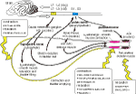

Bladder
• cystitis is common and is treated with antibiotics
• incontinence is common after spaying in bitches - α1 agonists ± oestogens
• urine pH is sometimes manipulated to increase the effects of drugs or dissolve stones
• drugs which affect motility have lots of side effects
• drugs do not always work
commonly used drugs
cystitis
amoxycillin
ampicillin
incontinence
phenylpropanolamine ± oestrogen
The bladder
The bladder is a common cause of problems, particularly in dogs and cats.
Common problems
Cystitis
Incontinence and retention
Urolithiasis
diagram
Bladder lecture
4 Autonomic index